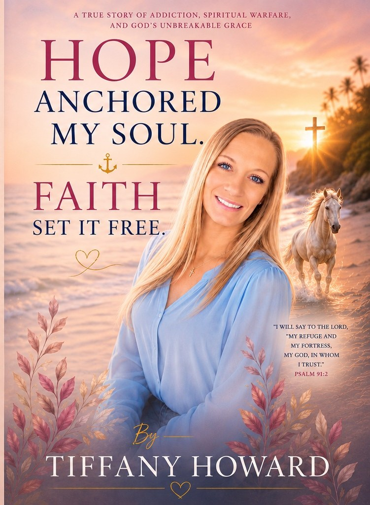

All Scripture from the King James Version. © Refined Recovery Network.

Refined Recovery Network exists to restore lives, rebuild families, and return people to purpose — through the power of Jesus Christ. Every tool we build, every Refined Place we launch, every partnership we form serves that one mission. The technology makes it scalable. The covenant makes it real.

Not a chatbot. A covenant accountability companion — scripture-anchored, recovery-aware, and available at 2am when no one else is awake.
CALEB is not a chatbot. CALEB is a Covenant Accountability Liaison and Encouragement Bot — a scripture-anchored AI companion that knows your progress, remembers your struggles, speaks in KJV, and walks alongside you every single day. No other recovery platform has anything like it.

KJV throughout. Daily reading, memory scripture, step exams, mentor accountability, and teacher notes on every lesson. Free for every member, always.

Encrypted. No app download. Built into the platform. Peer support, group recovery, employer interviews, court check-ins — one tap from any device.
No app to download. No account to create. Encrypted video sessions built directly into the RRN platform — for one-on-one peer support, group recovery meetings, employer interviews, court check-ins, mentor sessions, and family accountability calls. Any device. Any location. Any time.
Transportation is the number one reason court-ordered program participants miss required check-ins. Every missed check-in generates a violation report, a warrant, a hearing, and hours of officer time. RRN's video check-in system eliminates that cycle entirely — replacing transportation failures with verified, timestamped, documented video sessions that courts accept as compliance evidence.
Pre-screened. Curriculum-verified. Pastor-accountable. No agency fees — ever.
The provider directory grows as workers sign up. Paid jobs build income and verifiable work history. Be one of the first — offer your services below.

A complete transportation ministry platform — for members who need rides, community drivers who want income, and churches that want a bus ministry without the bus.
Chariot is not a feature — it is a complete transportation ministry platform. It solves two problems at once: transportation barriers for members and income opportunities for community drivers. Recovery-aware. Ministry-connected. Purpose-driven.
Refined Recovery Network is actively building relationships with Louisiana courts, district attorneys, judges, and magistrates. We are established, operational, and ready to serve as your court-mandated accountability partner — delivering the documentation courts require, the real-time oversight officers need, and the structured programming that actually reduces recidivism.
All member recovery records are protected under 42 CFR Part 2 — the federal law governing substance use disorder records that is stricter than HIPAA. RRN shares compliance documentation only with explicit written consent from the member or under valid court order, fully compliant with federal law.
You cannot get a job, open a bank account, get housing, or access benefits without your documents. RRN's Document Recovery system guides you through recovering every piece of your identity — step by step, with CALEB walking alongside you.
A person leaving incarceration or a recovery program with no ID, no birth certificate, and no social security card cannot get a job, cannot get housing, cannot open a bank account, and cannot access the benefits they are entitled to. Document recovery is not paperwork — it is the gateway to everything else.
Recovery is a family event. RRN supports the entire household — reunification planning, parenting skills, family accountability, community resources, prayer networks, and the daily spiritual disciplines that make transformation stick.
RRN is building a tokenized investment ecosystem across four program categories. Each structured as a separate SPV LLC with SEC-compliant offering. No funds collected at this stage — expressing interest places you on the priority list for when formal offerings launch.
RRN uses a Delaware Series LLC master structure — one master entity formed once, with each investment category operating as a protected series inside it. This dramatically reduces formation costs per investment while maintaining full legal separation between assets. Each series issues its own tokens or membership interests under Reg D or Reg CF. Investment activity is completely separate from ministry charitable operations.

One conversation. One location. One more community with the full system deployed. That is how the network grows.
The RRN platform is what makes the network possible. A local leader with a calling gets the full system — curriculum, AI companion, workforce pipeline, transportation, court compliance, housing tools, grants, and financial management — deployed and running on day one. Every new Refined Place strengthens the entire network. The platform is the engine. The locations are the impact.
Every Refined Place location runs on the RRN platform — curriculum, CALEB AI, workforce tools, Chariot, court reporting, housing management, grants, and financial tracking all in one system. The platform makes it possible for a local leader to operate a full-service restoration center from day one. That is how the network scales without losing quality or accountability.
Churches do not have to become Refined Places to benefit from the network. The platform is a connective infrastructure layer that sits above existing ministries — strengthening and amplifying their impact without replacing what God already built.
The Refined Place Network actively seeks partnerships with any ministry or organization already doing the work — regardless of size, denomination, or current technology level.
Have a calling but no structure? The Refined Place Network provides a pathway for new ministry leaders — program design, community outreach planning, leadership development, technology implementation, grant readiness, and partnership development. Local leaders maintain full ownership of their ministry.
Every gift supports recovery programs, housing, workforce, and transportation — 100% of net program funds deployed. Administrative costs covered through platform licensing revenue.
Curriculum is complete and live. CALEB AI is live. All other features in active rollout, expanding as the network grows. Request access and we send the link within 24 hours.
Select every area you want to connect on. We route to the right person and follow up within 24 hours.
Recovery first, always. Each step builds real freedom — and quietly opens the door to the One who supplies the power to walk it out. All Scripture King James Version.
Testimonies, teaching, and encouragement for the road of recovery.
All Scripture from the King James Version. © Refined Recovery Network.
“”
New Refined Place locations are opening across Louisiana. Event calendars go live as each house opens. Want to put your business or ministry in front of our community? Ad space is available below.
Every story deserves to be heard. Every struggle deserves support. Every person deserves hope. Share anonymously, and let a praying community walk with you — with prayer, encouragement, and real help.
What you shared tells us you may be going through something serious. Please reach out — you do not have to carry this alone, and people are ready to help this moment.
Your story has been flagged for priority review by our ministry team. If you left an email, someone will reach out personally.
Your church can walk with this person — we never expose their identity. Tell us how you can help, and our team coordinates privately and safely. Stories are self-reported and have not been independently verified.
Get updates as this story moves forward — and keep praying along the way.
You do not have to carry it alone. Send us your request and our recovery family will lift it up in prayer. Share as much or as little as you want.
Promote your recovery program, treatment center, business, or event to a Louisiana audience that is rooting for second chances. Audio spots on Refined Radio, banner placement on the site, and event sponsorships available. Inquire for current rates.
Help us reach more people who need hope. Listen, invite your friends, and share the station — and we’ll celebrate you for it. Rewards here are recognition and honor, not cash: badges, on-air shout-outs, featured testimony spots, and invitations to special events. Free to join. No purchase or donation ever required.
Share this link. When friends you invite join through it, you get the credit in the Refined app.
Every clean day is grace. We honor recovery milestones — counted from your recovery start date — with recognition and a blessing, made possible by partnering local churches. This is encouragement for the journey, not a clinical or medical determination. Your privacy is protected; you are only recognized publicly if you choose to be.
One place to find the next step — churches with recovery ministries, housing, food, work, and treatment referrals across the region. Refined Radio is your front door to help.
Structured testimonies that meet people where they are: the before, the turning point, and the ongoing walk. One-year milestones, family perspectives, and honest relapse-to-recovery arcs — some shared on-air as audio episodes. We only ever share a story with the person’s permission.

“Whoever shall call upon the name of the Lord shall be saved.” — Romans 10:13
Before. A little girl grew up surrounded by trauma, abuse, addiction, abandonment, and loss. That girl carried those wounds into addiction, jail, losing her children, and near-death experiences — battles that nearly destroyed her faith.
The turning point. Through every trial she refused to stop believing in God — and discovered He never abandons His children, even when they wander. Time and again she witnessed His protection, His mercy, and His power to transform a broken life.
Now. Restored and free, Tiffany writes and walks alongside others to help them see that no pit is too deep, no addiction too strong, and no life too broken for God’s grace. Hope anchored her soul. Faith set it free.
Read Tiffany’s Full Story“Therefore if any man be in Christ, he is a new creature: old things are passed away; behold, all things are become new.” — 2 Corinthians 5:17
Before. Deshay grew up in a home shaped by her parents' addiction, and by 16 she had moved out on her own. What followed was years of methamphetamine addiction, broken relationships, and losses no one should have to carry — both of her children removed from her care, jail, and a decision she still grieves: signing away her son's custody rather than see him raised in the system.
The turning point. Three years clean, married, and raising her family back together, Deshay's world shattered when her mother took her own life. The grief pulled her back into addiction — until conviction from the Holy Spirit, and a husband who chose to fight for her instead of walking away, brought everything into the light.
Now. Today, Deshay is 19 months clean. She walks into rehabilitation centers to tell others what she knows firsthand — that her testimony was never about how strong she is. It's about how faithful God is.
Read Deshay’s Full StoryChurches become active nodes in the network — adopt listeners for prayer and follow-up, host weekly recovery nights promoted on-air, and let pastors rotate through on-air segments. Radio becomes an extension of your church.
Standardize the network without medical claims. These are peer and ministry training tracks — not clinical licensure — that prepare people to walk alongside others in recovery with integrity.
These are peer and ministry certificates of completion. They are not a license to provide clinical, medical, or mental-health treatment, and do not certify professional competency under Louisiana licensing law.
Christian music, recovery testimonies, teaching, and encouragement — around the clock. Helping the hurting, restoring hope, and sharing the love of Jesus Christ. Tap the player below to listen.
Get notified when new music, programs, and the Recovery App launch.
Be among the first when the Refined Recovery app launches — lessons, your accountability partner, and CALEB, in your pocket.
Books written by people in recovery — for people in recovery. “And they overcame him by the blood of the Lamb, and by the word of their testimony.” (Revelation 12:11, KJV) Add or edit titles in the BOOKS data block in this file.